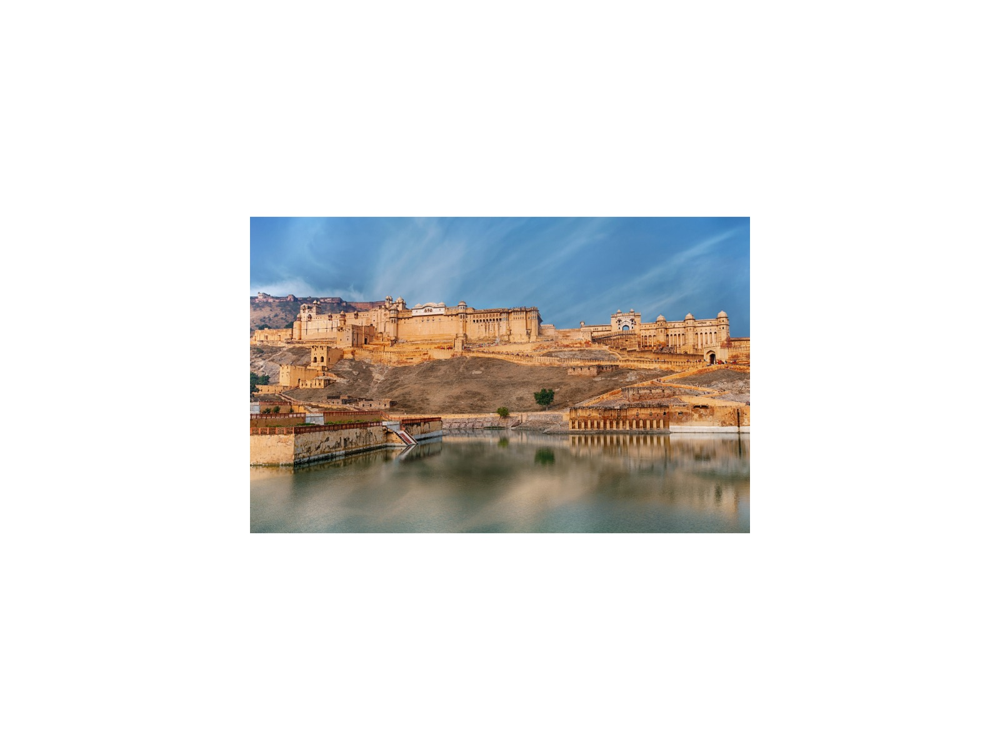

Агра и Фатехпур-Сикри
Тадж-Махал, форт Агры, Фатехпур-Сикри и мавзолеи Акбара и Итимад-уд-Даулы.
Достопримечательности и памятники
Часть страниц памятников пока на английском языке.


Путешествия, которые посещают это направление
 1 день
1 деньОднодневный частный тур из Дели: Тадж-Махал и форт Агры
Утренний свет на Тадж-Махале и красные дворики форта Агры за один частный день из Дели — с личным гидом и автомобилем.
Подробнее →2 дня2 дня: Агра и Джайпур — Тадж-Махал и Розовый город
Тадж-Махал на закате и форты и дворцы Джайпура — быстрый тур с ночёвкой для тех, кто любит ранние подъёмы.
Подробнее → 3 дня
3 дня3 дня: Золотой треугольник — Дели, Агра и Джайпур
Дели, Агра и Джайпур за три дня: самое важное из классического маршрута по Индии с частным гидом.
Подробнее →
4 дня4 дня: Золотой треугольник экспресс — Дели, Джайпур и Агра
Полный Золотой треугольник за четыре дня: от переулков Старого Дели до фортов Джайпура, Фатехпур-Сикри и рассвета у Тадж-Махала.
Подробнее →5 дней5 дней: классический Золотой треугольник — раджпутская и могольская Индия
Классический Золотой треугольник без спешки: горные форты Джайпура, колодец Чанд-Баори и рассвет у Тадж-Махала.
Подробнее → 6 дней
6 дней6 дней: Золотой треугольник и дикая природа — до Бхаратпура
Золотой треугольник в сочетании с заповедником Кеоладео — для тех, кто хочет увидеть и наследие, и птиц.
Подробнее → 8 дней
8 дней8 дней: Золотой треугольник и Каджурахо — могольское, раджпутское и чандельское наследие
От Тадж-Махала и фортов Джайпура до Гвалиора, Орчхи и Каджурахо: восемь дней по могольской, раджпутской и чандельской Индии.
Подробнее → 16 дней
16 дней16 дней: Тадж, тигры и форты — большая одиссея по Раджастану
Шестнадцать дней фортов Раджастана, дюн, тигриных сафари и Тадж-Махала — для тех, кто хочет увидеть всю картину.
Подробнее →2 дня2 дня: Агра, Фатехпур-Сикри и императорские мавзолеи Моголов
Спокойный могольский уикенд в Агре: Тадж-Махал на рассвете и закате, форт Агры, Фатехпур-Сикри и императорские мавзолеи.
Подробнее →Расскажите о датах и интересах
Я лично подготовлю программу и расчёт стоимости в течение 24 часов. Никаких групп и шаблонов.